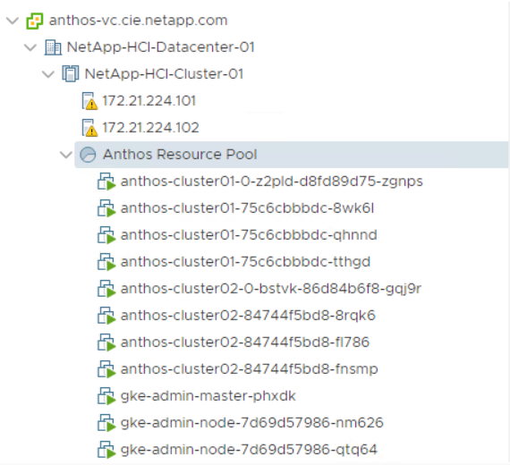

8. Deploy the Admin and the First User Cluster: NetApp HCI with Anthos
Contributors
 Download PDF of this topic
Download PDF of this topic
All Kubernetes clusters deployed as a part of the Anthos solution are deployed from the Anthos admin workstation that you just created. A user logs into the admin workstation using SSH, the public key created in a previous step, and the IP address provided at the end of the VM deployment. They can then begin creating their first clusters.
| There are specific procedures for deploying clusters that use static IP addresses here, and procedures for environments with DHCP can be found here. In this guide, we use the second set of instructions. |
To deploy the initial admin and first user cluster, complete the following steps:
-
Login to the admin workstation using the SSH public key and the IP address output at the end of Terraform deployment.
[user@rhel7 ~]$ ssh -i ~/.ssh/vsphere_workstation ubuntu@10.63.172.21 Welcome to Ubuntu 18.04.3 LTS (GNU/Linux 4.15.0-62-generic x86_64) * Documentation: https://help.ubuntu.com * Management: https://landscape.canonical.com * Support: https://ubuntu.com/advantage This system has been minimized by removing packages and content that are not required on a system that users do not log into. To restore this content, you can run the 'unminimize' command. 36 packages can be updated. 23 updates are security updates. To run a command as administrator (user "root"), use "sudo <command>". See "man sudo_root" for details. ubuntu@admin-workstation:~$
-
Log in with the
gcloud authcommand as you did before from your deployment workstation by copying the URL into a web browser, signing into your Google account, and pasting the verification code back into the workstation.ubuntu@admin-workstation:~$ gcloud auth login Go to the following link in your browser: https://accounts.google.com/o/oauth2/auth?code_challenge=Q1F7H-CMUMuArasQD6AzHA0avKolGfDqUyUgjFxf9ZI&prompt=select_account&code_challenge_method=S256&access_type=offline&redirect_uri=urn%3Aietf%3Awg%3Aoauth%3A2.0%3Aoob&response_type=code&client_id=32555940559.apps.googleusercontent.com&scope=https%3A%2F%2Fwww.googleapis.com%2Fauth%2Fuserinfo.email+https%3A%2F%2Fwww.googleapis.com%2Fauth%2Fcloud-platform+https%3A%2F%2Fwww.googleapis.com%2Fauth%2Fappengine.admin+https%3A%2F%2Fwww.googleapis.com%2Fauth%2Fcompute+https%3A%2F%2Fwww.googleapis.com%2Fauth%2Faccounts.reauth Enter verification code: 6/swFG_ZKZyd0eblfuXsgtnBgYrIt1XwFQeB5ASrEQaaDfa09aio0bnNg WARNING: `gcloud auth login` no longer writes application default credentials. If you need to use ADC, see: gcloud auth application-default --help You are now logged in as [user@netapp.com]. Your current project is [None]. You can change this setting by running: $ gcloud config set project PROJECT_ID -
Set the project that you intend to deploy your clusters in for Anthos on VMware, because the project is not set by default when you log in.
ubuntu@admin-workstation:~$ gcloud config set project anthos-dev Updated property [core/project].
-
Register gcloud as a Docker credential helper, which enables it to manage the credentials for Docker registries used for deployment. This way, the default credential store is not used for operations involving the credentials of the specified registries.
ubuntu@admin-workstation:~$ gcloud auth configure-docker The following settings will be added to your Docker config file located at [/home/ubuntu/.docker/config.json]: { "credHelpers": { "gcr.io": "gcloud", "us.gcr.io": "gcloud", "eu.gcr.io": "gcloud", "asia.gcr.io": "gcloud", "staging-k8s.gcr.io": "gcloud", "marketplace.gcr.io": "gcloud" } } Do you want to continue (Y/n)? y Docker configuration file updated.By default, Anthos on VMware uses a pre-existing, Google-owned container image registry that requires no additional setup. If you choose to use a private Docker registry for deployment, then you must configure that registry separately based on instructions found here. This step is beyond the scope of this deployment guide. -
In the next step to deploy an admin cluster, create a private key file in the JSON format for each of the service accounts created in the prerequisites section.
ubuntu@admin-workstation:~$ gcloud iam service-accounts list NAME EMAIL DISABLED stackdriver-service-account@anthos-dev.iam.gserviceaccount.com False register-service-account@anthos-dev.iam.gserviceaccount.com False access-service-account@anthos-dev.iam.gserviceaccount.com False connect-service-account@anthos-dev.iam.gserviceaccount.com False ubuntu@admin-workstation:~$ gcloud iam service-accounts keys create access-key.json --iam-account access-service-account@anthos-dev.iam.gserviceaccount.com created key [8d5f8ce039dd98766e18a3c5ee6794912fb8d095] of type [json] as [access-key.json] for [access-service-account@anthos-dev.iam.gserviceaccount.com] ubuntu@admin-workstation:~$ gcloud iam service-accounts keys create register-key.json --iam-account register-service-account@anthos-dev.iam.gserviceaccount.com created key [f08b494c665321f83bcb8c8526ba21185b456a11] of type [json] as [register-key.json] for [register-service-account@anthos-dev.iam.gserviceaccount.com] ubuntu@admin-workstation:~$ gcloud iam service-accounts keys create connect-key.json --iam-account connect-service-account@anthos-dev.iam.gserviceaccount.com created key [c9640021ff6157d3df2a15db49f5c85b7b1495c2] of type [json] as [connect-key.json] for [connect-service-account@anthos-dev.iam.gserviceaccount.com] ubuntu@admin-workstation:~$ gcloud iam service-accounts keys create stackdriver-key.json --iam-account stackdriver-service-account@anthos-dev.iam.gserviceaccount.com created key [3c9427dfdef161d139ff998be896565c1df0b122] of type [json] as [stackdriver-key.json] for [stackdriver-service-account@anthos-dev.iam.gserviceaccount.com] -
For the next step, you must use the access service key created in the previous step to activate the associated service account.
ubuntu@admin-workstation:~$ gcloud auth activate-service-account --key-file=access-key.json Activated service account credentials for: [access-service-account@anthos-dev.iam.gserviceaccount.com]
-
The deployment of the first clusters is performed using inputs from a config file generated by GKE. A generic config file can be created with no additional input, or an existing config file can be referenced to create additional clusters.
ubuntu@admin-workstation:~$ gkectl create-config ubuntu@admin-workstation:~$ ls access-key.json config.yaml connect-key.json register-key.json stackdriver-key.json
-
The
config.yamlfile created by running the previous command has several variables that must be customized for the current environment.-
First, you must determine the full path location and the name of the current GKE bundle that is deployed into the environment. The file exists in the
/var/lib/gke/bundlesdirectory on the admin workstation.ubuntu@admin-workstation:~$ ls /var/lib/gke/bundles gke-onprem-vsphere-1.1.1-gke.2-full.tgz gke-onprem-vsphere-1.1.1-gke.2.tgz
-
Next, you must get the fully recognized host name or IP address of our vCenter Server as displayed in its default SSL certificate. Connect to vSphere and dump the certificate contents into a file called
vcenter.pem. Examining this file gives you the information that you need for the value ofSubject: CN(common name).ubuntu@admin-workstation:~$ true | openssl s_client -connect anthos-vc.cie.netapp.com:443 -showcerts 2>/dev/null | sed -ne '/-BEGIN/,/-END/p' > vcenter.pem ubuntu@admin-workstation:~$ openssl x509 -in vcenter.pem -text -noout | grep Subject:\ CN Subject: CN = anthos-vc.cie.netapp.com, C = USIf the value added to the config.yamlfile does not match that of the CN found in the certificate, communication with the vCenter server fails.
-
-
With the information from those two commands and the generated
vcenter.pemfile, we can now edit theconfig.yamlfile to prepare for deployment. Editing this file is very similar to the edits that you performed to theterraform.tfvarsfile to provide specifics regarding the VMware vCenter instance deployed in NetApp HCI.When deploying the cluster, determine which IP addresses to use for the control plane and ingress VIPs for both the admin and user cluster. Also determine the compute and memory resources that must be reserved for each node deployed, because it is not possible to edit a cluster after it has been deployed. # Absolute path to a GKE bundle on disk bundlepath: "/var/lib/gke/bundles/gke-onprem-vsphere-1.1.1-gke.2-full.tgz" # Specify which vCenter resources to use for deployment vcenter: # The credentials and address GKE should use to connect to vCenter credentials: address: "anthos-vc.cie.netapp.com" username: "administrator@vsphere.local" password: "vcpass" datacenter: "NetApp-HCI-Datacenter-01" datastore: "VM_Datastore" cluster: "NetApp-HCI-Cluster-01" network: "VM_Network" resourcepool: "Anthos Resource Pool" # Provide the name for the persistent disk to be used by the deployment (ending # in .vmdk). Any directory in the supplied path must be created before deployment. # Not required when adding additional user clusters datadisk: "anthos-admin-data-disk.vmdk" # Provide the path to vCenter CA certificate pub key for SSL verification cacertpath: "/home/ubuntu/vcenter.pem" # Specify the proxy configuration. proxy: # The URL of the proxy url: "" # The domains and IP addresses excluded from proxying noproxy: "" # Specify admin cluster settings for a fresh GKE On-Prem deployment. Omit this section # and use the --adminconfig flag when adding a new user cluster to an existing deployment admincluster: # In-Cluster vCenter configuration vcenter: # If specified it overwrites the network field in global vcenter configuration network: "" # # The absolute or relative path to the yaml file to use for static IP allocation. # # Do not include if using DHCP # ipblockfilepath: "" # # Specify pre-defined nodeports if using "manual" load balancer mode # manuallbspec: # ingresshttpnodeport: 32527 # ingresshttpsnodeport: 30139 # controlplanenodeport: 30968 # addonsnodeport: 31405 # Specify the already-existing partition and credentials to use with F5 bigip: # To re-use credentials across clusters we recommend using YAML node anchors. # See https://yaml.org/spec/1.2/spec.html#id2785586 credentials: address: "172.21.224.22" username: "admin" password: "lbpass" partition: "Anthos-Admin-Part" # # Optionally specify a pool name if using SNAT # snatpoolname: "" # The VIPs to use for load balancing vips: # Used to connect to the Kubernetes API controlplanevip: "10.63.172.98" # Shared by all services for ingress traffic ingressvip: "10.63.172.99" # # Used for admin cluster addons (needed for multi cluster features). Must be the same # # across clusters # addonsvip: "" # The Kubernetes service CIDR range for the cluster. Must not overlap with the pod # CIDR range serviceiprange: 10.96.232.0/24 # The Kubernetes pod CIDR range for the cluster. Must not overlap with the service # CIDR range podiprange: 192.168.0.0/16 # Specify settings when deploying a new user cluster. Used both with a fresh deployment # or when adding a new cluster to an existing deployment. usercluster: antiaffinitygroups: enabled: false # In-Cluster vCenter configuration vcenter: # If specified it overwrites the network field in global vcenter configuration network: "" # # The absolute or relative path to the yaml file to use for static IP allocation. # # Do not include if using DHCP # ipblockfilepath: "" # # Specify pre-defined nodeports if using "manual" load balancer mode # manuallbspec: # ingresshttpnodeport: 30243 # ingresshttpsnodeport: 30879 # controlplanenodeport: 30562 # addonsnodeport: 0 # Specify the already-existing partition and credentials to use with F5 bigip: # To re-use credentials across clusters we recommend using YAML node anchors. # See https://yaml.org/spec/1.2/spec.html#id2785586 credentials: address: "172.21.224.22" username: "admin" password: "lbpass" partition: "Anthos-Cluster01-Part" # # Optionally specify a pool name if using SNAT # snatpoolname: "" # The VIPs to use for load balancing vips: # Used to connect to the Kubernetes API controlplanevip: "10.63.172.105" # Shared by all services for ingress traffic ingressvip: "10.63.172.106" # # Used for admin cluster addons (needed for multi cluster features). Must be the same # # across clusters # addonsvip: "" # A unique name for this cluster clustername: "anthos-cluster01" # User cluster master nodes must have either 1 or 3 replicas masternode: cpus: 4 memorymb: 8192 # How many machines of this type to deploy replicas: 1 # The number of worker nodes to deploy and their size. Min. 2 replicas workernode: cpus: 4 memorymb: 8192 # How many machines of this type to deploy replicas: 3 # The Kubernetes service CIDR range for the cluster serviceiprange: 10.96.0.0/12 # The Kubernetes pod CIDR range for the cluster podiprange: 192.168.0.0/16 # # Uncomment this section to use OIDC authentication # oidc: # issuerurl: "" # kubectlredirecturl: "" # clientid: "" # clientsecret: "" # username: "" # usernameprefix: "" # group: "" # groupprefix: "" # scopes: "" # extraparams: "" # # Set value to string "true" or "false" # usehttpproxy: "" # # # The absolute or relative path to the CA file (optional) # # capath: "" # # Optionally provide an additional serving certificate for the API server # sni: # certpath: "" # keypath: "" # Which load balancer mode to use "Manual" or "Integrated" lbmode: Integrated # Specify which GCP project to connect your GKE clusters to gkeconnect: projectid: "anthos-dev" # The absolute or relative path to the key file for a GCP service account used to # register the cluster registerserviceaccountkeypath: "/home/ubuntu/register-key.json" # The absolute or relative path to the key file for a GCP service account used by # the GKE connect agent agentserviceaccountkeypath: "/home/ubuntu/connect-key.json" # Specify which GCP project to connect your logs and metrics to stackdriver: projectid: "anthos-dev" # A GCP region where you would like to store logs and metrics for this cluster. clusterlocation: "us-east1" enablevpc: false # The absolute or relative path to the key file for a GCP service account used to # send logs and metrics from the cluster serviceaccountkeypath: "/home/ubuntu/stackdriver-key.json" # # Optionally use a private Docker registry to host GKE images # privateregistryconfig: # # Do not include the scheme with your registry address # credentials: # address: "" # username: "" # password: "" # # The absolute or relative path to the CA certificate for this registry # cacertpath: "" # The absolute or relative path to the GCP service account key that will be used to # pull GKE images gcrkeypath: "/home/ubuntu/access-key.json" # Configure kubernetes apiserver audit logging cloudauditlogging: projectid: "" # A GCP region where you would like to store audit logs for this cluster. clusterlocation: "" # The absolute or relative path to the key file for a GCP service account used to # send audit logs from the cluster serviceaccountkeypath: "" -
Because spacing in YAML files can be very important, you can check the syntax of the config file by running the following command. If the command outputs any failures, be sure to examine the file and make any needed corrections.
ubuntu@admin-workstation:~$ gkectl check-config --config config.yaml - Validation Category: Config Check - [SUCCESS] Config - Validation Category: Docker Registry - [SUCCESS] gcr.io/gke-on-prem-release access - Validation Category: vCenter - [SUCCESS] Credentials - [SUCCESS] Datacenter - [SUCCESS] Datastore - [SUCCESS] Data Disk - [SUCCESS] Resource Pool - [SUCCESS] Network - Validation Category: F5 BIG-IP - [SUCCESS] Credentials - [SUCCESS] Partition - Validation Category: Network Configuration - [SUCCESS] CIDR, VIP and static IP (availability and overlapping) - Validation Category: VIPs - [SUCCESS] ping (availability) - Validation Category: Node IPs - [SKIPPED] ping (availability): All specified clusters use DHCP. Some validations FAILED or SKIPPED. Check report above.Using DHCP skips the step to validate node IP availability. This is an expected behavior and deployment can continue. -
Preparing the cluster for deployment and deploying the cluster are performed with two commands:
-
The
gkectl preparecommand initializes the vSphere environment by uploading the node OS image, marking it as a template, and validating the build attestations for all container images.ubuntu@admin-workstation:~$ gkectl prepare --config config.yaml - Validation Category: Config Check - [SUCCESS] Config - Validation Category: Docker Registry - [SUCCESS] gcr.io/gke-on-prem-release access - Validation Category: vCenter - [SUCCESS] Credentials - [SUCCESS] Datacenter - [SUCCESS] Datastore - [SUCCESS] Data Disk - [SUCCESS] Resource Pool - [SUCCESS] Network All validations SUCCEEDED. Downloading OS image gke-on-prem-osimage-1.13.7-gke.20-20190816-8138298d96.ova... DONE Setting up OS image as a VM template in vSphere... DONE -
The
gkectl create clustercommand deploys the cluster as depicted in theconfig.yamlfile.ubuntu@admin-workstation:~$ gkectl create cluster --config config.yaml
-
The process runs for several minutes and can be monitored on screen and in vCenter by watching the resource pool as the VMs populate. When complete, you should be able to see the
gke-admincluster (three nodes) and the first user cluster (four nodes).During the deployment process, the standard out might display several messages about the current node not being available or not being ready. This is normal and happens when the control plane checks for machines that have not yet completed deployment or received DHCP addresses. When using DHCP, if a deployment fails because nodes cannot be reached, there might not be enough available addresses in the pool. Leases for previously failed deployments might need to be cleared manually to allow for additional deployment attempts.  -
You can access and execute commands against the user cluster that has been deployed using the kubectl command line tool and the
kubeconfigfile generated by the process (stored in the working directory).ubuntu@Anthos-Admin-Workstation:~$ kubectl get nodes --kubeconfig anthos-cluster01-kubeconfig NAME STATUS ROLES AGE VERSION anthos-cluster01-75c6cbbbdc-8wk6l Ready <none> 149m v1.13.7-gke.20 anthos-cluster01-75c6cbbbdc-qhnnd Ready <none> 149m v1.13.7-gke.20 anthos-cluster01-75c6cbbbdc-tthgd Ready <none> 149m v1.13.7-gke.20
-
 Edit on GitHub
Edit on GitHub